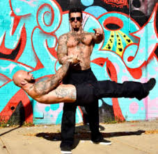
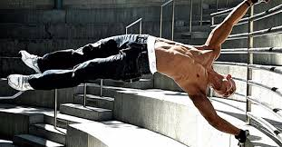

Calisthentics
Dietary Help
Exercises
What is Calisthentics?
Calisthenics are exercises consisting of a variety of gross motor movements (running, standing, grasping, pushing, etc.)often performed rhythmically and with minimal equipment, so essentially, bodyweight exercises. They are intended to increase body strength, body fitness, and flexibility, through movements such as pulling or pushing oneself up, bending, jumping, or swinging, using only one's body weight for resistance; usually conducted in concert with stretches. When performed vigorously and with variety, calisthenics can provide the benefits of muscular and aerobic conditioning, in addition to improving psychomotor skills such as balance, agility and coordination.
Urban calisthenics are a form of street workout; calisthenics groups perform exercise routines in urban areas. Individuals and groups train to be able to perform advanced calisthenics skills such as muscle-ups, barspins, and both front and back levers.
Sports teams and military units often perform leader-directed group calisthenics as a form of synchronized physical training (often including a customized "call and response" routine) to increase group cohesion and discipline. Calisthenics are also popular as a component of physical education in primary and secondary schools over much of the globe.
In addition to general fitness, calisthenic exercises are often used as baseline physical evaluations for many military organizations, such as the U.S. Army Physical Fitness Test and the U.S.M.C Physical Fitness Test.
Why Should You Do Calisthentics?

- It's free! You only need your will power
- You can do it anywhere
- It keeps you physically healthy and strengthens your whole body
- Your workouts can take less than 10 minutes
- Develops coordination, flexibilty, and endurance
- It's a lot more interesting and fun than doing a bunch of bicep curls

Where Can You Start?
Right here, right now! This page will give you everything you need!